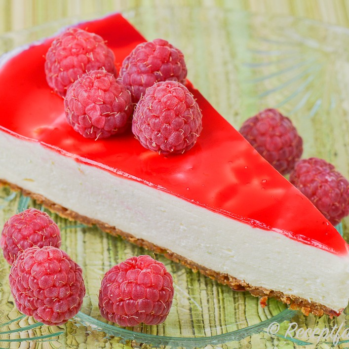

Vitchoklad och Hallon Cheesecake

En frisk Cheesecake för alla säsonger
En vitchoklad och citron cheesecake med ett hallon glaze täcke.
Ingredienser
Botten
- 20 digestive kex
- 100g smör
Cheesecaken
- 5 Gelatinblad
- 2 Ägg
- 400g Philadelphia Färskost
- 2dl Crémé Fraíche
- 1.5dl Strösocker
- 2tsk Vaniljsocker
- 1-2 Citroner, rivet skal och saft
- Rivet limeskal
- 100g Vit Bakchoklad
Hallon Glaze
- 250g Frysta Hallon
- 3 Gelatinblad
- 2msk Strösocker
- 4msk Vatten
- 4msk Citron saft
- 2mks Lime saft
Topping
- 100g Vit Bakchoklad riven
Steg 1 Botten
- Kör kexen i en mixer till ett grovt pulver (inte för fint)
- Smält smör och blanda ihop med kexen till rätt konsistens
- Tryck ut till ett jämnt lager i botten av formen
- Ställ in i kylen medans fyllningen görs
Steg 2 Cheesecaken
- Lägg gelatinbladen i kallt vatten i ca 5 min.
- Separera äggulorna och äggvitorna till två separata skålar
- Späd med grädde (blir det för tjockt spädd med mjölk)
- I med en rejäl jävla mängd riven ost
- Rör hela tiden på medelvärme så det inte bränner fast
- När allt är smält och du är nöjd med konsistens så smaka av med vitpeppar och salt
Steg 3 Hallon Glaze
- Smörj en form och köttfärsås i botten
- Sedan lassagne plattor
- Och sen ostsås eller varva som du vill
- In i ugn på 200 grader i 20-30 minuter
- Strö på tärnad fetaost sista 5 minuterna